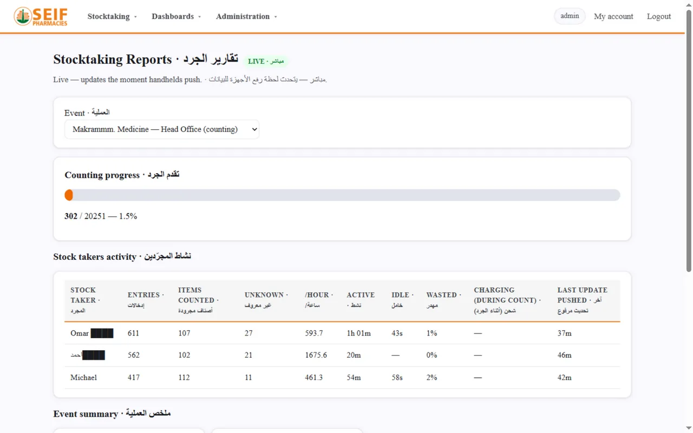
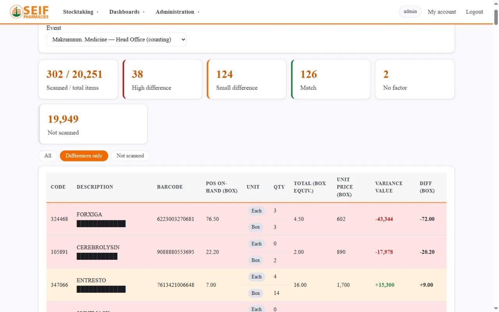
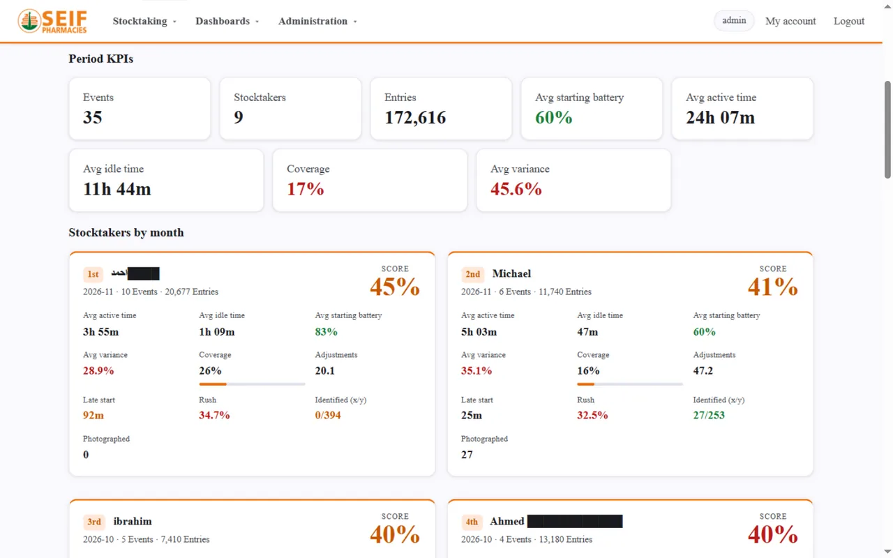

Seif Pharmacies · In production · 2026–present
Seif Stocktaking Platform
End-to-end digital stocktaking for a pharmacy chain — web portal, Android scanner fleet, and one-click branch installer kits, built and operated end to end.
Replaced a paper-and-spreadsheet physical count with a complete in-house platform: a web portal on the company's own server, an offline-first Android app for the handheld fleet, and installer kits that stand up a new branch in minutes. Every scan is attributable to a person, device, and timestamp. Items with no scannable barcode are counted natively on the device; unknown ones are photographed on the floor and resolved through a portal review flow that feeds the commercial department.
- 107,000-item product master counted digitally — including the ~49% of items that carry no international barcode
- 95–99% inventory record accuracy, measured as a per-branch KPI
- Live across 10+ branches; wireless sync replaced per-device USB loading
- Recovered and rebuilt 12 stocktake events after a server crash — zero counted scans lost
- Outputs: variance, over/short netting, movement PDFs, and per-user monthly KPI scorecards
How it works
- POS balances (positive / negative / zero) are pulled into a new stocktake event on the portal.
- The event is pushed over Wi-Fi to every handheld; each counter signs in with a PIN, so every scan is attributable.
- The crew scans offline-first — barcode, quantity, box or each — unknown items get photographed for review.
- The portal produces variance, netting, movement PDFs and per-counter KPI scorecards the moment devices push.